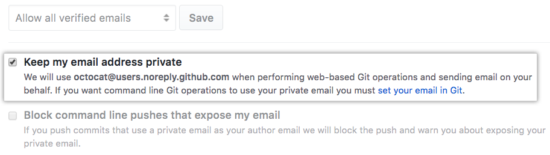

前言
最近误打误撞地参加了阿里云的《云开发校园合伙人创造营》，发现许多小伙伴都有自己的博客。自己只会一点基础的HTML、CSS和PHP，又心痒想赶快拥有一个，于是就有了这个博客。
综合容易上手但又保留一些自己开发部署的空间这两点，我选择了hexo，它还可以直接推到GitHub Pages (github.io)上，很方便。现在还没搭建好，先发一篇文章露个脸~
我还没有JavaScript, json, typescript等基础，对服务器、http、IP、域名、Serverless、NodeJS框架等等的概念，也是这两天才大致捋清楚。所以这系列的文章就当是记录一下我学习囫囵吞枣的历程，或许一些操作不太规范，但先追求完成，在追求完美。从经验中学习，我也会慢慢补齐知识漏洞的！
1. 安装
我的运行环境：Windows Ubuntu WSL（指令与一般Ubuntu相同）
先安装NodeJS
sudo apt upgrade |
curl -sL https://deb.nodesource.com/setup_14.x | sudo -E bash - |
查看NodeJS与npm版本（目前最新版本分别为v14.x和v6.x）
nodejs -v |
接下来需要安装并配置好自己的git，这里不作展示了。
安装hexo
npm install -g hexo-cli |
-g指general，使hexo可全局使用，而非只安装在一个项目中。
2. 创建网站与文章
新建一个hexo项目
hexo init <directory> |
安装依赖
cd <directory> |
打开你的项目后，就可以正式开工了。
首先在项目根目录下的_config.yml修改基本网站信息，比如
# Site |
更多配置选项参考，可以前往hexo官方文档 https://hexo.io/zh-cn/docs/configurationhexo init新建的项目默认采用landscape主题，并已经导入了主题文件，在根目录下的/themes/landscape中。
更多主题可以在 https://hexo.io/themes/ 或者第三方找到。如需更换，首先修改上述_config.yml中的以下信息：
# Extensions |
再把主题代码放置（如git clone）到/themes目录下。如果主题有新的依赖，需要修改packages.json，并再次执行npm i (i for install)。
接着配置你的域名。如果使用GitHub Pages（GitHub免费提供的<username>.github.io域名），_config.yml代码如下
# Deployment |
接下来尝试添加一篇文章，若文章标题包含空格，采用双引号包裹
hexo new [layout] <title> |
这将默认生成一个markdown文件到/sources/_posts目录下，若需修改目录，在上述命令中加入-p <directory>。
接着就可以开始写文章啦~
3. 部署网站
如果需要快速托管代码到Github
npm i hexo-deployer-git --save |
可以先清除缓存和已产生的静态文件
hexo clean |
生成静态文件 (g for generate)
hexo g |
启动伺服器 (s for server)
hexo s |
终端会提示以http://localhost:4000/查看网站。按Ctrl+C结束进程。
部署网站 (d for deploy)
hexo d |
可以采用hexo d -g 或 hexo g -d同时完成generate和deploy。
大功告成！
GitHub Pages设置
如果你的GitHub账号设置了Keep my email addresses private，你需要提前配置git，否则hexo无法push代码到你的仓库中

git config --global user.email "email you use for github" |
然后每次deploy的时候按终端提示输入GitHub的username和password即可。
参考资料：
1. hexo. 文档.
2. Medium.com. Successfully install the latest NodeJS on the latest Ubuntu on WSL (v1), fix GPG key error.
3. winney. Hexo + GitHub Pages 搭建个人博客.
4. GitHub.com. Setting your commit email address.